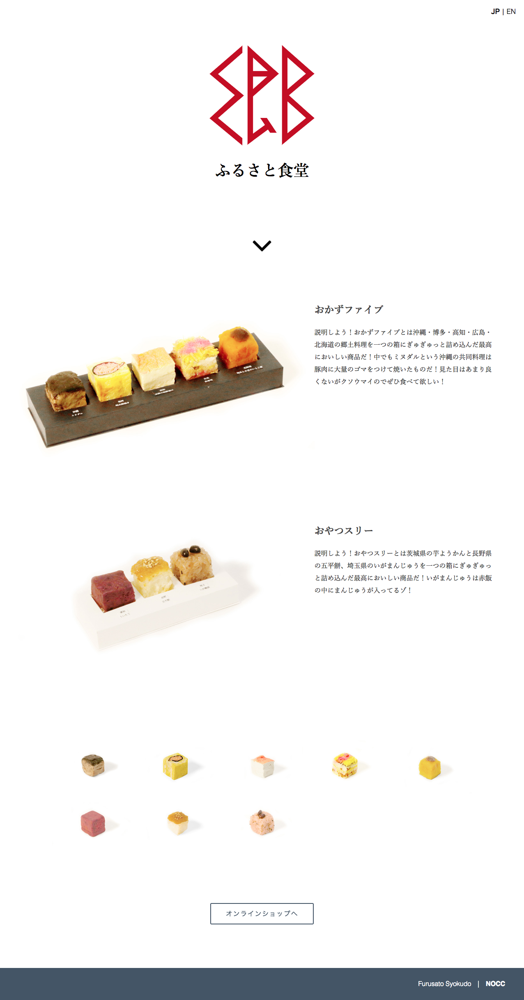

３期 課題発見 授業課題
NOCC 会社サイト
商品を魅力的に紹介する
独特な商品紹介文とページ下部の立方体に整えられた郷土料理たちを整列させて商品を魅力的に紹介した。海外展開も狙っている商品なので英語版ページも制作した。
URL http://dipale.musabi.ac.jp/y16/dibasic1/b/
制作ソフト Adobe Photoshop sublimetext
使用技術 html5 css3 jquery
製作期間 １週間
関連する作品